Membership — một app tích điểm cho ba mảng kinh doanh
Membership — one loyalty app for three business lines
Từ yêu cầu "làm giống VinClub" đến 84 màn chạy thử mà mọi chi tiết truy được về một quyết định có người ký.
From a brief that said "make it like VinClub" to 84 working screens where every detail traces back to a signed decision.
Tên tập đoàn, các đơn vị, địa điểm và người đã được đổi. Số liệu trên màn là dữ liệu mẫu. Màn hình lấy từ bản chạy thử HTML do tôi dựng, không phải app đã phát hành.
Group, business unit, place and people names have been changed. Figures on screen are sample data. Screens come from the HTML prototype I built, not a released app.
Bối cảnh và vấn đề
Context and problem
Một tập đoàn có ba mảng: co-working, chuỗi cà phê, khu nghỉ dưỡng. Mỗi mảng ghi nhận khách riêng.
A group runs three lines: co-working, a coffee chain, a resort. Each one keeps its own customer records.
- Khách quen của cả tập đoàn vẫn bị đối xử như khách lẻ ở từng quầy.
- Không có lý do nào để chọn dịch vụ trong tập đoàn thay vì nơi khác.
- Yêu cầu ban đầu chỉ có một câu: "membership và điểm thưởng tương tự Vingroup, Viettel".
- A loyal customer of the group is still treated as a walk-in at every counter.
- Nothing gives them a reason to pick the group's services over anyone else's.
- The initial brief was one line: "membership and points, like Vingroup or Viettel".
Một chương trình thành viên không phải là app. Nó là một chuỗi quyết định về tiền, dữ liệu và pháp lý, và màn hình chỉ là nơi các quyết định đó lộ ra.Nên việc đầu tiên không phải vẽ, mà là liệt kê những gì chưa ai quyết, ai sẽ quyết, và chỉ vẽ màn đã đủ thông tin.
A loyalty programme is not an app. It is a chain of decisions about money, data and law, and the screens are only where those decisions become visible.So the first job was not drawing. It was listing what nobody had decided yet, who would decide it, and drawing only the screens that had enough answers.
Research: học gì từ các chương trình đang chạy
Research: what running programmes already teach
Mỗi quy tắc trên màn hình đều có một hệ thống thật đã làm trước, hoặc một văn bản pháp luật đứng sau
Every rule on screen has a real system that did it first, or a regulation behind it
Tôi lập một file tham khảo sống, cập nhật mỗi khi brainstorm chạm tới một quy tắc mới. Mỗi mục ghi rõ hai mức tin cậy: nguồn đã tra (có link tài liệu công khai) và nguồn tham khảo (hiểu biết chung, phải kiểm lại trước khi trích ra ngoài). Dưới đây là phần ảnh hưởng trực tiếp tới giao diện.
I kept a living reference file, updated every time a brainstorm touched a new rule. Each entry carries one of two confidence levels: verified (linked to a public document) or general knowledge (to be checked before quoting outside). Below are the entries that shaped the interface directly.
| Chi tiết trên màn | Detail on screen | Học từ | Learned from | Vì sao áp dụng | Why it applies |
|---|---|---|---|---|---|
| Mã QR voucher tự đổi mỗi phút, ảnh chụp không quét được | Voucher QR rotates every minute; a screenshot cannot be scanned | Google Wallet | Chặn chia sẻ mã qua ảnh, không cần thêm bước xác minh | Stops code sharing by photo without adding a verification step | |
| Điểm "đang chờ" phải hiện rõ giờ dùng được | "Pending" points must show exactly when they become usable | VinClub | VinClub cho điểm sau 12 giờ trưa hôm sau; khách chỉ chấp nhận chờ khi biết chờ đến bao giờ | VinClub releases points at noon the next day; customers accept a wait only when they know when it ends | |
| Trừ điểm sắp hết hạn trước | Spend the soonest-expiring points first | Tata Neu · FIFO | Khách không mất điểm oan khi vẫn còn điểm mới hơn | Customers never lose points they could have used while newer points sit idle | |
| Trừ điểm tại quầy phải có khách xác nhận trên app | Point deduction at the counter needs the customer's confirmation in-app | VinClub | Nhân viên không tự tiêu được điểm của khách | Staff cannot spend a customer's points on their own | |
| Cần mã PIN cho việc tiêu điểm, OTP một mình không đủ | A PIN for spending points; OTP alone is not enough | Nghiên cứu Princeton 2021 | Princeton study, 2021 | 171 trên 259 số điện thoại được nhà mạng cấp lại vẫn gắn với tài khoản chủ cũ | 171 of 259 recycled phone numbers were still tied to the previous owner's accounts |
| Ngưỡng "sắp rời bỏ" khác nhau theo mảng | A different "at-risk" threshold per business line | Paytronix · Adobe · Nexudus | Khách cà phê vắng 30 ngày là đáng lo; khách nghỉ dưỡng 12 tháng mới là bình thường | 30 days of silence worries a café; a resort guest returning after 12 months is normal | |
| Hai ô đồng ý tách riêng, lưu thời điểm và phiên bản | Two separate consent boxes, timestamped and versioned | L.Point · Shinsegae · NĐ 13/2023 | Dùng chung dữ liệu giữa các công ty cần căn cứ; điều khoản và nhận ưu đãi là hai việc khác nhau | Sharing data across companies needs a legal basis; terms and marketing consent are two different things | |
| Nhận ưu đãi bằng nút "Nhận vào ví" | Claim an offer with a "Save to wallet" button | Shopee | Có số "tỉ lệ nhận" để đo chiến dịch; bước bấm nhận là thói quen khách đã quen | Gives a claim rate to measure campaigns; the tap is a habit customers already have | |
| Tối đa 2 thông báo ưu đãi mỗi tháng, gửi 8–21 giờ | At most 2 offer notifications a month, sent 8:00–21:00 | Braze · Adobe · NĐ 91/2020 | Nghị định cho 7–22 giờ; chọn khung hẹp hơn để không bị coi là làm phiền | The decree allows 7:00–22:00; a narrower window keeps the app from feeling like spam |
Điều tôi chưa làm được: cảm xúc trong các hành trình đang suy từ điểm đau trong tài liệu, chưa phỏng vấn người dùng. Bộ câu hỏi phỏng vấn 10 đối tượng đã soạn ngày 13/10 và ghi rõ chỗ nào là giả định.
What I could not do yet: the emotions in the journeys are inferred from documented pain points, not from interviews. A 10-audience interview guide was written on 13/10 and marks every assumption as such.
Nguyên tắc vẽ: từ nghiệp vụ ra màn hình
Drawing principles: from rules to screens
Chi tiết nào tài liệu chưa nói thì ghi "tự chọn". Chỗ nào chưa quyết thì không vẽ, để lại câu hỏi và tên người trả lời.
Anything the documents do not say is marked "my choice". Anything undecided is not drawn; a question and the name of the person who answers it take its place.
Mỗi trạng thái một khung
One frame per state
Lỗi, trống, hết suất, mất mạng đều là khung riêng. Người duyệt thấy đủ nhánh, không phải tưởng tượng.
Error, empty, sold-out and offline each get their own frame. Reviewers see every branch instead of imagining it.
Thẻ ghi chú cạnh từng màn
A note card beside every screen
Ba phần: quy tắc và nguồn, chuyển động gợi ý, chờ quyết định. Mã yêu cầu đi kèm tên tài liệu để không nhầm.
Three parts: rule and source, suggested motion, pending decision. Requirement IDs always name their document.
Hai bộ nền, không dùng chung
Two design bases, never shared
Công cụ nội bộ: dày dữ liệu, bo 4px. App khách: nền sáng, thẻ hạng là điểm nhấn, màu ngọc cho hành động, cam chỉ cho việc gấp.
Internal tools: data-dense, 4px radius. Customer app: light background, the tier card as the one highlight, teal for actions, orange only for urgency.
Câu chữ lấy nguyên văn câu đã chốt
Copy taken verbatim from agreed strings
Mỗi thông báo lỗi và thành công có trong bảng câu chữ của brainstorm. Câu chưa có thì ghi "tự viết, cần duyệt".
Every error and success message exists in the brainstorm's string table. New ones are marked "drafted, needs approval".
Chuyển động không là điều kiện để hiểu
Motion never required to understand
Điểm đếm lên, vé bay vào ví chỉ là ghi chú. Máy bật Reduce Motion thì chỉ còn mờ dần.
Counting points and tickets flying into the wallet are notes only. With Reduce Motion on, only fades remain.
Điểm đau trong hành trình và màn hình trả lời
Journey pain points and the screens that answer them
| Điểm đau | Pain point | Màn hình trả lời bằng | Answered on screen by |
|---|---|---|---|
| Mỗi mảng ghi nhận riêng, không ai biết là khách quen của cả tập đoàn | Each line keeps its own records; nobody knows a group-wide regular | Ba ô "Tích điểm ở" trên Trang chủ; mảng khớp số điện thoại tự liên kết | Three "Earn at" tiles on Home; lines matching the phone number link automatically |
| Nhân viên không quét mã thì không có điểm ngay | No scan at the counter means no points right away | Dòng điểm đang chờ kèm giờ dùng được, trên thẻ hạng và lịch sử | A pending line with the exact usable time, on the tier card and in history |
| Lo bị trừ điểm mà không có voucher khi hết suất | Fear of losing points with no voucher when stock runs out | Màn "Vừa hết suất" nhắc lại số điểm còn nguyên và gợi ưu đãi tương tự | A "Just sold out" screen restating the untouched balance and suggesting similar offers |
| Nhân viên quét nhầm, quầy mất mạng | Staff scan the wrong voucher; the counter goes offline | Lý do từ chối ghi to; mất mạng thì chỉ lưu tạm tích điểm, khoá dùng điểm và voucher | Rejection reasons in large type; offline mode queues earning only and locks spending |
| Khách nghỉ dưỡng quay lại thưa, điểm dễ hết hạn | Resort guests return rarely; points expire | Dải cam trên Trang chủ khi có điểm hết hạn trong 30 ngày, kèm nút Đổi điểm | An orange band on Home when points expire within 30 days, with a Redeem button |
Các vòng sửa: cái gì đã bỏ và vì sao
Iterations: what was dropped and why
Bản đầu chép khá sát mô hình tham chiếu. Mỗi vòng phản hồi gỡ một giả định mà tôi đã coi là hiển nhiên.
The first version followed the reference model closely. Each round of feedback removed an assumption I had taken for granted.
| Ngày | Date | Bản trước | Before | Bản sau | After | Vì sao đổi | Why |
|---|---|---|---|---|---|---|---|
| 20/10 | Hành trình khách trải cả năm, 6 pha, cảm xúc chấm từ tài liệu | A year-long, six-phase customer journey with emotions scored from documents | Ba chuỗi ngắn, mỗi chuỗi gói trong một lần ghé quầy và kết thúc bằng phần thưởng ngay | Three short chains, each inside one counter visit and ending with an immediate reward | PM: hành trình dài khó đo cảm xúc, khách dễ bỏ cuộc giữa chừng | PM: long journeys are hard to measure and customers drop out midway | |
| 20/10 | Đăng ký xong thì chờ; điểm đầu tiên chỉ có sau lần mua đầu | Sign up, then wait; the first points come only after the first purchase | Voucher chào mừng vào ví ngay lúc đăng ký, dùng được cho hoá đơn đang trả | A welcome voucher lands in the wallet at sign-up, usable on the bill being paid | Không có lý do nào để khách tải app ngay tại quầy nếu không được gì ngay | No reason to install the app at the counter if nothing happens right away | |
| 21/10 | Một cách nhận ưu đãi | One way to receive an offer | Ba phương án A, B, C vẽ song song; chốt B "bấm nhận vào ví" | Three options A, B, C drawn side by side; B "tap to save" chosen | B đo được tỉ lệ nhận. C mở quà ngẫu nhiên là khuyến mại may rủi, phải đăng ký với Sở Công Thương | B gives a measurable claim rate. C, a random gift box, counts as a lottery and must be registered with the trade authority | |
| 16–26/10 | Dùng điểm trừ tiền: khách tự mở mã cho nhân viên quét | Paying with points: the customer opens a code for staff to scan | Cả hai cách vẽ song song; chốt: nhân viên gửi yêu cầu, khách xác nhận trên app khi từ 200.000 điểm | Both ways drawn side by side; chosen: staff send a request, the customer confirms in-app from 200,000 points | Số tiền lớn cần khách đồng ý rõ ràng; dưới ngưỡng thì giữ quầy nhanh | Large amounts need explicit consent; below the threshold the counter stays fast | |
| 27/10 | Nhập mã PIN 6 số mỗi lần đổi ưu đãi, kèm 2 màn sai PIN và khoá | A 6-digit PIN on every redemption, plus two wrong-PIN and lockout screens | Vuốt để đổi, không PIN. PIN chỉ còn khi trừ tiền tại quầy từ 200.000 điểm | Swipe to redeem, no PIN. The PIN remains only for counter deductions from 200,000 points | Đổi một ly cà phê không đáng một bước bảo mật. Hai màn Figma bỏ hẳn | Redeeming a coffee is not worth a security step. Two Figma screens were dropped | |
| 27/10 | Trang chủ có thanh tiến độ "còn 320 điểm lên Platinum" | Home showed a progress bar "320 points to Platinum" | Thay bằng thẻ "điểm sắp hết hạn", đổi màu cam khi còn dưới 30 ngày | Replaced by an "expiring points" card that turns orange under 30 days | Cách xét hạng chưa chốt; vẽ thanh tiến độ là hứa một thứ chưa ai ký | Tier rules were still open; a progress bar promised something nobody had signed |
Ba phương án nhận ưu đãi, vẽ để người quyết chọn trong một buổi
Three ways to receive an offer, drawn so the decision took one meeting
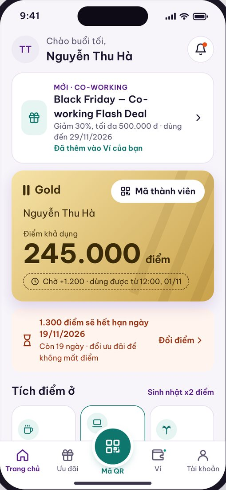
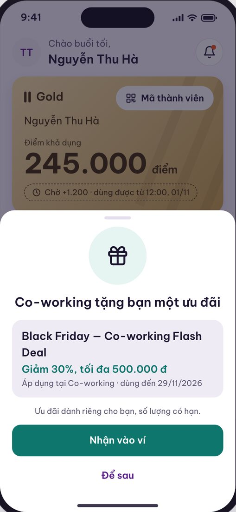
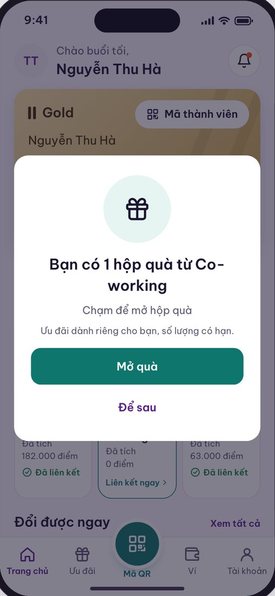
Bản cuối: ba hành trình trên hai thiết bị
Final screens: three journeys on two devices
Thấy bảng, quét mã, đăng ký một chạm, dùng voucher cho chính hoá đơn đang trả
See the sign, scan, sign up in one tap, use the voucher on the bill being paid

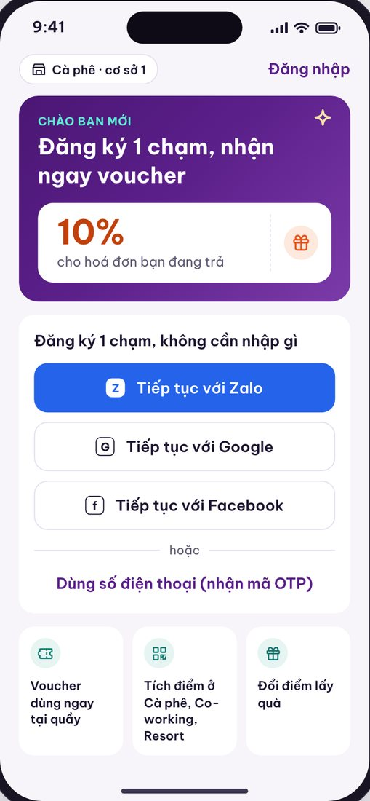
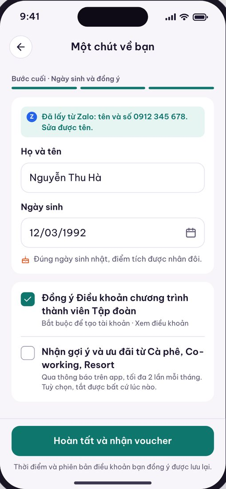

Trang chủ trả lời ba câu khách hay hỏi: có bao nhiêu điểm dùng được, điểm chờ khi nào dùng được, điểm nào sắp hết hạn
Home answers the three questions customers ask most: how many points can I use, when do pending points clear, which ones expire soon

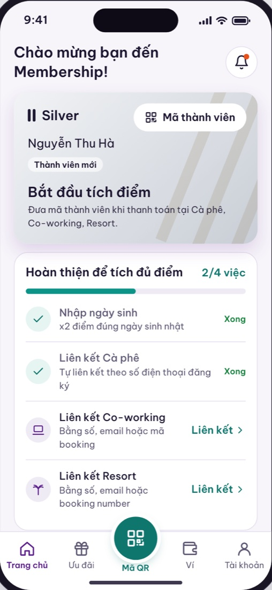
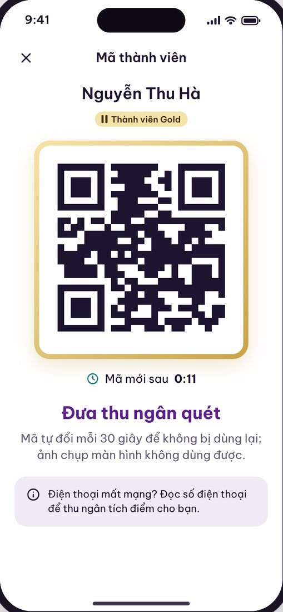
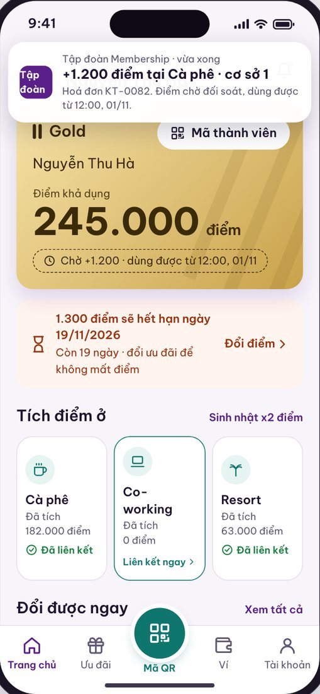
Phía khách và phía nhân viên vẽ cạnh nhau, vì một lần quét là hai màn hình phải khớp
Customer side and staff side drawn together, because one scan means two screens have to agree
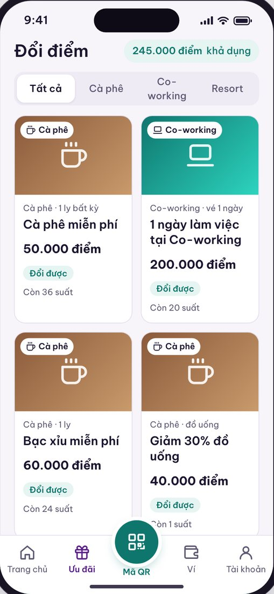
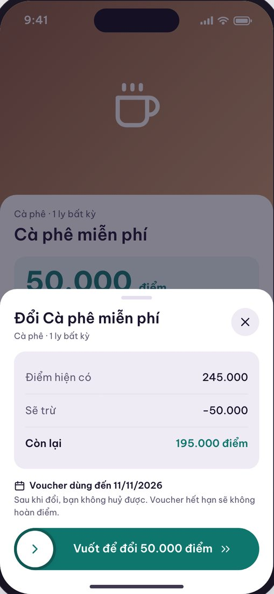

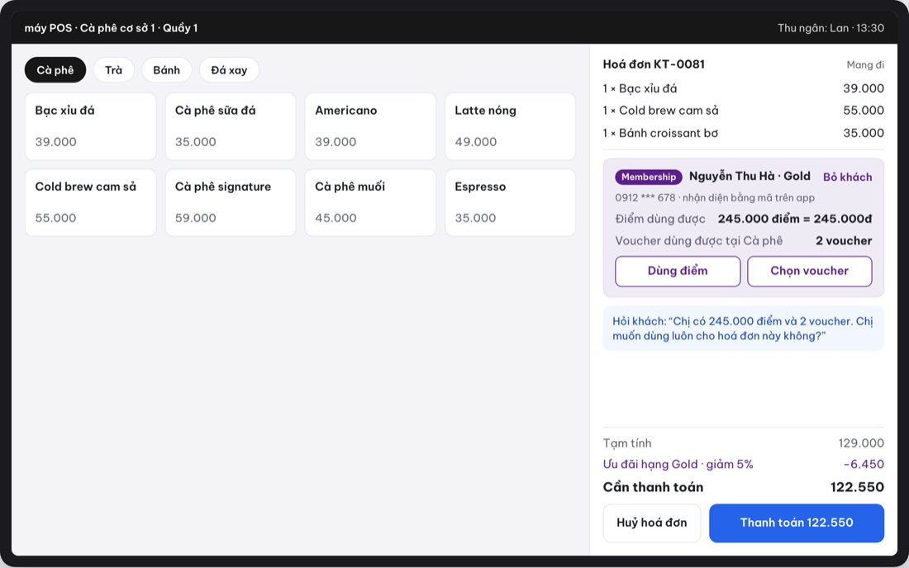
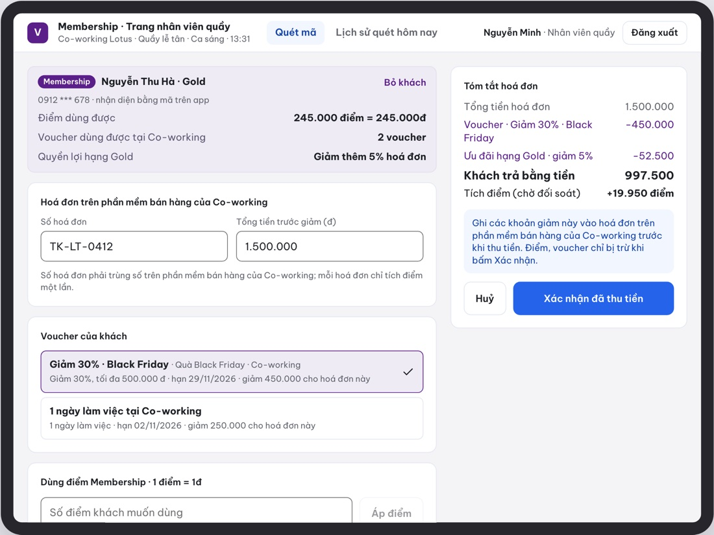
Trạng thái biên: phần người duyệt hay quên hỏi
Edge states: the part reviewers forget to ask about
Trong 84 màn có 26 màn là trạng thái lỗi, trống, hết hạn hoặc mất mạng. Mỗi màn dùng đúng câu chữ trong bảng lỗi đã chốt và nói rõ khách làm gì tiếp.
Of the 84 screens, 26 are error, empty, expired or offline states. Each uses the exact wording from the agreed error table and says what the customer does next.
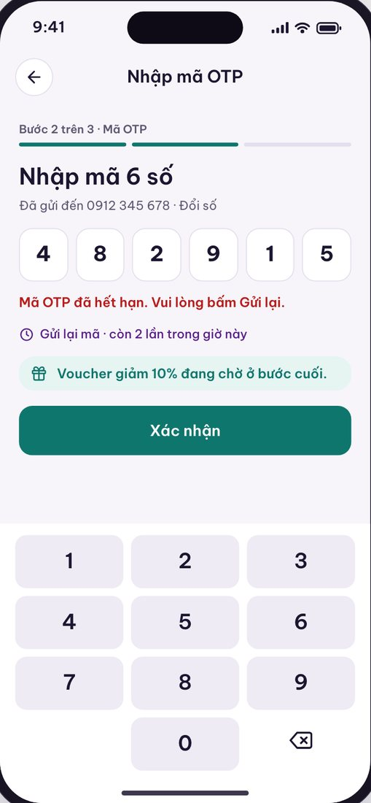
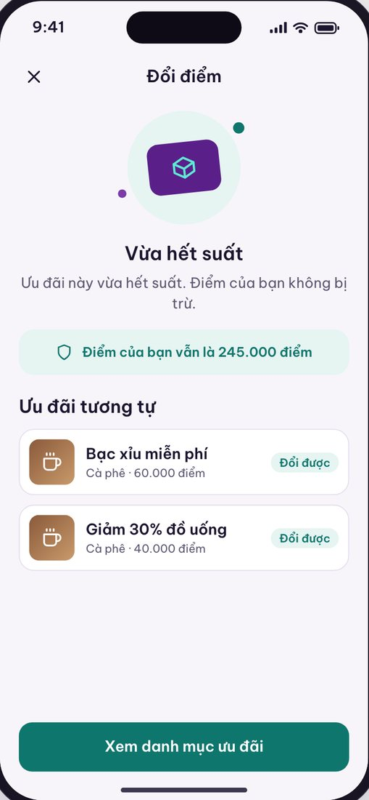
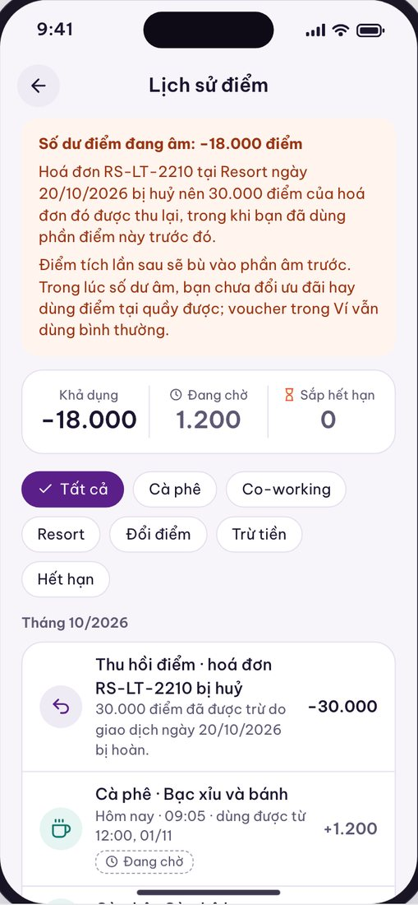
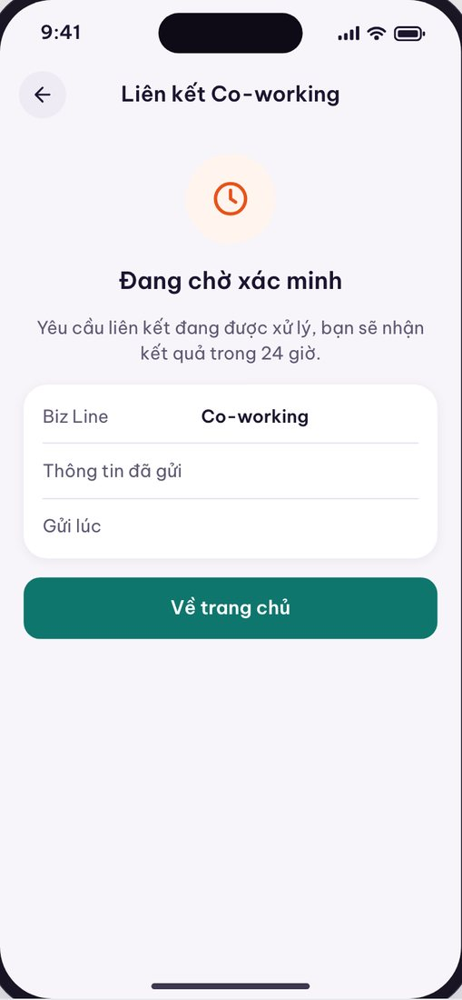
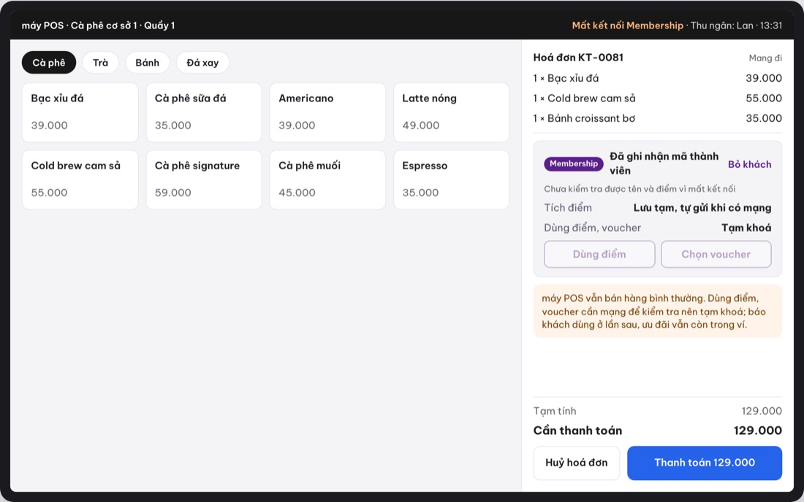
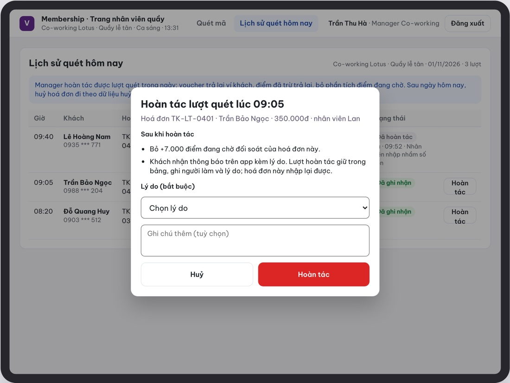
Kết quả và bài học
Outcome and lessons
Điều tôi làm khác đi lần sau
What I would do differently
- Không vẽ trước khi chốt. Hành trình cả năm và màn PIN đều phải bỏ vì tôi vẽ theo mô hình tham chiếu trước khi hỏi. Nguyên tắc "chỉ vẽ màn đủ thông tin" ra đời từ hai lần đó.
- Vẽ song song thay vì tranh luận. Ba phương án nhận ưu đãi và hai cách trừ điểm đều được chốt trong một buổi, vì người quyết nhìn thấy thay vì nghe mô tả.
- Bản chạy thử cho thấy thứ Figma không cho thấy. Mất mạng, hết suất, số dư âm chỉ thuyết phục được khi người duyệt tự bấm và thấy hệ thống phản ứng.
- Chỉ tin số đã tra nguồn. Hai mức tin cậy trong file tham khảo giúp tôi nói được "cái này chắc, cái này cần kiểm" trước Pháp chế và Kế toán.
- Do not draw before deciding. The year-long journey and the PIN screens were both dropped because I drew from the reference model before asking. The rule "draw only what has enough answers" came out of those two cases.
- Draw alternatives instead of arguing. Three ways to receive an offer and two ways to deduct points were each settled in one meeting, because decision-makers saw them rather than heard them described.
- A working prototype shows what Figma cannot. Offline mode, sold-out races and negative balances only convinced people once they tapped through and watched the system react.
- Trust only verified numbers. Two confidence levels in the reference file let me say "this is certain, this needs checking" in front of Legal and Finance.
Cách tôi dùng AI trong dự án này
How I used AI on this project
Màn Figma được vẽ qua kết nối MCP từ tài liệu đã chốt, mỗi màn kèm thẻ ghi chú dẫn nguồn. Bản chạy thử HTML được dựng từ brainstorm, URD và biên bản họp, rồi tôi tự kiểm từng màn so với 43 câu đã chốt và ghi mục "Khác với Figma" cho chỗ lệch. AI không quyết định gì về nghiệp vụ; mọi con số và câu chữ đều có người ký.
Figma screens were drawn through an MCP connection from the agreed documents, each with a note card citing its source. The HTML prototype was generated from the brainstorm, URD and meeting records, then I checked every screen against the 43 closed questions and logged each deviation under "Differs from Figma". AI decided nothing about the business; every figure and string has a person's name behind it.